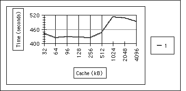

|
|
This Technical Note is a collection of useful ideas and suggestions to help you
decrease the time required to compile and link under MPW. Some of the issues
are even relevant to any development tools running under the Macintosh
environment. The Technote will also clarify what performance tunings work, and
which are marginal or may not work at all.
[May 01 1992]
|
Introduction
This Technical Note contains information that will help you improve both
compilation and linking times, and also point out about performance tricks that
are marginal, or may not work at all. Most likely this information will be
updated and modified as we gain more knowledge of how to speed up compilations
and link stages. This Note is biased towards the MPW environment.
However, there are many ideas that can be used with any other Macintosh
development platforms. The issues are ordered from hardware- or system-related
issues to specific MPW and MPW tool issues, and these are not listed in any
particular order of efficiency.
Many of these ideas are benchmarked and the results are marked with a special
note at the end of the paragraph . The equipment/environment consisted of:
- Macintosh 900 Quadra, 160Mb internal hard disk, 20Mb physical RAM memory, no VM (unless stated)
- System 7.0.1 + TuneUp
- MPW 3.2 4Mb application heap, 256k file cache
- No extensions loaded, no network
- MacApp 3.0 Calc application source, C++ (when applicable)
Back to top
Hardware Issues
Accelerator Cards
We at DTS have had mixed input about using CPU accelerator cards. In general
they speed up number-crunching. However, they don't help with file I/O
bottleneck situations. Also they can cause compatibility problems with the
tools, so we strongly recommend taking out the card for testing if you
encounter weird problems during compilation or linking.
Before you buy a card, contact the appropriate accelerator card tech support
group, and ask about the compatibility of their card with various Macintosh
development systems. Try to borrow a card for a quick test to figure out if
buying the card is justified or not and if it works with the particular
development tools needed. Remember that accelerator cards based on NuBus(TM)
can easily congest the NuBus bus (which has a 10 MB/sec limit on data
transfers). Any possible savings in CPU execution could be lost in the NuBus
transfers.
SCSI I/O Cards and Hard Disk Access Times
File I/O is one of the known bottlenecks that affect MPW performance (however,
it's not the only bottleneck). Faster NuBus SCSI cards (like SCSI-2 cards)
should certainly improve the file I/O; how much depends on the file I/O access
figures. Also, shop around for hard disks with fast access times.
Back to top
System Issues
Background Processes
Every background process, including the Finder, takes CPU cycles that could be
used for compilation and linking. Try to limit the background tasks on your
compiling system. If possible turn off any unnecessary inits and drivers.
External Sources of Interrupts
You should be aware that the development machine connected to a network will
receive outside interrupts as part of the network protocol handling (as in
AppleTalk), and this will also consume needed CPU cycles. For example, System 7
Personal FileShare requires a lot of attention from the system itself. This is
also true of any other background communication protocol handling. The best
possible case is a standalone development system. However, for practical
reasons (like accessing common volumes) a developer can seldom afford to
configure a standalone environment. If possible, minimize the network access on
the development system.
If a server is connected to the system and is not used, the Finder still
attempts to keep its desktop in synch with the server. This consumes CPU
cycles. If the server and the network are busy then the machine is stuck
waiting. If possible, always remove servers from the desktop when they are no
longer needed.
[[Delta]] System in network + inits+ =
404s, no-network System =
379s, savings 6.25%.
+ mail services,
4 servers on desktop,
1 application in memory
|
File Cache
We suggest that you experiment with your particular system configuration, there
is no magic value which we could recommend. There's however a difference
between System 6.0.x and 7.x. Large cache sizes in System 6 will not improve
the performance due to a bug, which is fixed in System 7. If your development
tool is mostly in memory during the execution, many of the resources and data
files may be cached in memory between the execution stages. Following is a test
where we changed the cache size between 32k and 4096k while compiling the same
sources. As shown we didn't directly find an optimal value, so the 96k value is
a good approximation.

Figure 1. cache size vs. compilation time
Back to top
System 7 Virtual Memory
The use of virtual memory is recommended when you would like to have many
development tools running at the same time. However, VM is much slower than
real memory; it constantly needs to read/write to the much slower hard disk.
One exception is the IIci with its built-in video. IIci has a non-contiguous
memory map, and uses the MMU to map the logical addresses. The algorithms used
by the ROM are slower than the ones used by VM. However the access gates slower
if a page fault occurs.
Note also that 32-bit mode runs faster than 24-bit mode.
[[Delta]] VM on+ = 481s, VM off = 400s, savings 16.8%.
|
Back to top
Compiler Issues
Compiler Flags
Eliminate any compiler flags that are not necessary for the code compilation.
For example, optimization flags take more CPU cycles, and in many cases the
code produced without optimization is OK for a quick syntax or functionality
test. Read the manuals carefully; they should indicate which flags are default
ones. Note also that the MacApp has its own Startup file where many
compiler flags are defined.
The -sym on/full flag will trigger .SYM file information
generation, and this takes time. If possible avoid symbolics generation until
you really need to debug.
Selected #include File Handling
A larger percent of a typical compile is spent reading the header files, so
reading them only once for each source file compilation is a win. We are
talking about cases where various source files each want to include the same
header file. The MPW C compiler has a special pragma called #pragma once, which
will make sure that each source file with this statement at the top of the file
will be read in only once. However this will not work with other languages -
like C++ - so the following guidelines are useful:
In your individual source files, bracket your C++ include files so that they
are not read more than once during a compilation of a source file:
/ / Utilities.cp
#ifndef _UTILITIES_
#include "Utilities.h"
#endif _UTILITIES_
|
Of course, you also need to put bracketing into your local include files so
that things don't go haywire if you do include the same file twice (note that
we recommend using only one underline, because ANSI C has reserved the use of
two underlines):
// Utilities.h
#ifndef _UTILITIES_
#define _UTILITIES_
// definitions
#endif _UTILITIES_
|
One trick is to define a global IncludeFiles.h file, which contains
all files needed for the other header files, and include it on demand inside
the other header files, using the #ifndef trick. A #pragma
once statement placed first in a C header file provides the same
functionality. However, we can't guarantee that the #pragma once
statements in C++ code end up in the right places with the generated C
code, so don't use this with C++.
[[Delta]] No #include labels = 183s,
include labels = 174s, savings 6.45%.
|
Back to top
C / C++ Compiler Issues
Load/Dump
load/dump is described in the MPW C++ Release Notes. It provides the
biggest single performance improvement possible when using MPW C++. Use the
-load and -dump flags instead of the MPW C #pragma
load/dump statements, because they work differently. #pragma load
and #pragma dump placed directly in C++ may have Cfront generate code
that appears before the pragma and thus could cause the load/dump to
work incorrectly.
MPW C also has this feature, implemented using #pragma load and #pragma dump -
compile time savings are similar to those found in C++. For more information
on how to use this feature, please refer to the MPW C 3.0 release notes, pages
40-41.
Tradeoffs Between Compiling Small and Large Files
Each time CPlus is triggered, MPW will load in resources needed for the
compiler. This also happens when CPlus triggers the C compiler. In the case of
a compilation of 10 files, the C++ and C resources are loaded 10 times in a
row.
There are cases where a huge file compilation is faster than compiling a number
of smaller files. The overall trick is to create dependencies (Makefiles) where
as few files as possible are recompiled when something changes.
Back to top
Pascal Compiler Issues
Limit Symbol Table Generation
The -p switch on the Pascal compiler is useful to determine where the
compiler is spending its time. For example, with MacApp the compiler should
spend a lot of time inside the MacApp units and in the PInterfaces
files when discarding predigested symbol resources on the interface files and
reanalyzing the source.
The goal is to configure a standard set of interface files so that we can
use the precompiled symbol information. Changing the order of includes or
USES statements could cause these resources to be rebuilt, taking
extra time.
Here is a possible strategy to help you analyze the information from the
compiler and define strategies that will minimize the need for resources and
make the compilation faster:
- ALL units should use
Types, QuickDraw, Packages, SANE, and Printing (if needed).
- When additional units are required, always use units from the newer,
smaller groupings:
Events, Controls, Desk,
Windows, TextEdit, Dialogs, Fonts,
Lists, Menus, Resources, Scrap, and
ToolUtils {instead of ToolIntf} OSUtils,
Files, Devices, DeskBus, DiskInit,
Disks, Errors, Memory, OSEvents,
Retrace, SegLoad, Serial, ShutDown,
Slots, Sound, Start and Timer {instead of
OSIntf} and Script, Palettes, Picker,
Perf, DisAsmLookup, AppleTalk.
-
Note that if you mix references to newer and older files it will take longer to
compile.
-
Always use units in the same order. The Apple units set compile flags that
must be identical the next time a unit is used or the compiler will not
use the symbolic resources.
-
The MacApp units also set compile flags, so they should appear after the
MPW:Interfaces:PInterfaces units and always in the same order.
-
Keep your own units in a consistent order in each USES statement,
especially if you use compiler variables in your source.
-
Adjust your build scripts to build units in the same order they are
listed in your USES statements.
-
As you clean up the units, compile them in a full build with the
-p
compiler option to verify the results of your work. The output will
indicate when the compiler uses the resources.
If you clean up your files in the order in which the units are built, you will
begin to accumulate savings as you go along. However, don't expect to see a
tremendous difference until nearly all your USES statements have been cleaned
up. When an uncleaned unit is compiled, the consistency of the symbol resources
is spoiled and the compiler starts parsing resources again. Moreover, it
leaves the units in this inconsistent state, so the next build must
begin by rebuilding the resources in a consistent manner.
Once the cleanup is complete, your application should build at its optimum
rate. If you are already pretty clean in your USES statements, you should be
getting near optimal performance.
If you haven't already done so, consider switching to the 3.0/C-style separate
interfaces instead of using OSIntf or ToolIntf. Unless you
use almost all the files included by these old-style units, you should use the
files as separate units, and get only what you need.
In all cases use Types.p instead of MemTypes.p and
Packages.p instead of PackIntf.p.
Try not to rely blindly on the auto-inclusion feature of the new interfaces. If
you let Packages include Types in one file and then use
Types before using Packages in the next file, you'll get
"symbol table churning": compile-time variables will be different and the
symbol table resources will have to be rebuilt each time.
Structure your Make file so that the units that come first in your
USES clause get compiled before later units and the main program. The symbol
table resources for a unit are always rebuilt when the unit is compiled. So if
you change a unit and the main program, and your Make file builds the
main program first, the symbol table resources for the unit will get built when
the program is compiled, and again when the unit is compiled.
Use the -p option every now and then to see how things are going.
Maybe you have compile-time variables that are causing symbol table churning,
or maybe the resource fork of a file has become corrupt. Maybe you don't have
enough memory to create the symbol table resource (MacApp needs more than a 4
MB partition, and use -mf with all tools if possible). Most of the
possible inefficiencies in reading or writing symbol table resources can be
displayed only by use of the -p option
If you use MacApp and switch between versions often
(Debug/noDebug and so on), you can put the directive {$K
$$Shell(ObjApp)} before the first unit in your USES clauses. This will
create the symbol table resources in files in the same directory as the
program's object files. So as you switch from :.Debug Files: to
:.Non-Debug Files: the right set of symbol table resources will
already be built.
Precheck the Pascal Syntax
You might precompile the code using Pasmat before the Pascal compiler is used,
which could be helpful for quickly finding syntax errors in the code without
the penalty of running the full compiler. You might define a command key that
performs the operation, as in the following:
AddMenu MyMenu 'Pasmat {Active}.[[section]]/[[pi]]'
'[[partialdiff]]
( Pasmat <"{Active}.[[section]]" >"{TemporaryFile}"
>= "{ErrorsFile}" [[partialdiff]]
&& Catenate "{TemporaryFile}"
> "{Active}.[[section]]" ;[[partialdiff]]
Delete -y "{TemporaryFile}" [[partialdiff]]
) || Alert <"{ErrorsFile}"'
|
You might also use the -c flag with the Pascal compiler for syntax
checking only. Back to top
Linker Issues
Limit Symbol Table Generation
In general it takes a lot of time for the linker to build the final .SYM file.
Try to avoid building symbol files unless needed (like when stuck with a
problem in the source code). In many cases the -msg full (or
-Names flag in MacApp) compiler flag for MacsBug name generation might
be OK for a test of where the application crashes.
You might also create a limited set of SYMBOLIC (.SYM) information. Here's an
example from MacApp 3.0 of how this could be achieved (in the case of general
C++ code, just specify'-sym on' in the C++ compiler for those
files that you need for debugging). This technique will also save both RAM and
disk space.
###########################################################
# L I B R A R Y D E P E N D E N C I E S
###########################################################
"{ObjApp}{LibName}"[[florin]][[florin]] [[partialdiff]]
{LibObjs}
IF {MacAppLibrary} || {LibName} !~ /MacApp.lib/ # Special trick to keep
MacApp libraries from building
{MAEcho} {EchoOptions} "Libbing: {LibName}"
SET XToolStartTime 'DATE -n'
# {MALib} [[partialdiff]]
# {LibOptions} [[partialdiff]]
# {OtherLibOptions} [[partialdiff]]
# {LibObjs} [[partialdiff]]
# -o "{ObjApp}{LibName}"
execute "Skinny Lib" <+++++++++ new script file
File: Skinny Lib -----------------------------
directory "{malibraries}.nodebug names sym nosys7:"
delete -i macapp.lib
lib -mf -w -sym off -o macapp.nosym [[partialdiff]]
Geometry.cp.o PascalString.cp.o Toolbox.cp.o UAppleEvents.cp.o
UAssociation.cp.o [[partialdiff]]
UBusyCursor.cp.o UClipboardMgr.cp.o UCPlusTool.cp.o UDebug.a.o
UDebug.cp.o [[partialdiff]]
UDeskScrapView.cp.o UEditionDocument.cp.o UErrorMgr.cp.o
UFailure.a.o UFloatWindow.cp.o [[partialdiff]]
UGeometry.cp.o UGrabberTracker.cp.o UKeySelectionBehavior.cp.o
UMacAppGlobals.cp.o [[partialdiff]]
UMacAppUtilities.cp.o UMemory.a.o UMenuMgr.cp.o UMenuView.cp.o
UPascalTool.p.o [[partialdiff]]
UPatch.cp.o USection.cp.o USectionMgr.cp.o UStream.cp.o
USynchScroller.cp.o [[partialdiff]]
UProjFileHandler.cp.o UScroller.cp.o UTabTEView.a.o
UTabTEView.cp.o [[partialdiff]]
UTearOffMenuView.cp.o UTECommands.cp.o UTEView.cp.o
UTranscriptView.cp.o [[partialdiff]]
UDependencies.cp.o UDesignator.cp.o UTabBehaviors.cp.o
#lib -mf -w -sym off,NoLabels,NoLines,NoVars -o
macapp.justTypes[[partialdiff]] lib -mf -w -sym off -o
macapp.justTypes[[partialdiff]]
UCommand.cp.o UCommandHandler.cp.o MacAppTypes.cp.o UAdorners.cp.o
UBehavior.cp.o [[partialdiff]]
UDrawingEnvironment.cp.o UEvent.cp.o UFile.cp.o UFileHandler.cp.o
UMemory.cp.o [[partialdiff]]
UIterator.cp.o UPopup.cp.o UViewBehavior.cp.o UViewServer.cp.o
lib -mf -w -sym on -o macapp.lib macapp.nosym
macapp.justTypes[[partialdiff]]
UApplication.cp.o UControl.cp.o UDialog.cp.o UDialogBehavior.cp.o
UDocument.cp.o [[partialdiff]]
UEventHandler.cp.o UFailure.cp.o UFileBasedDocument.cp.o
UGridView.cp.o [[partialdiff]]
UList.cp.o UObject.cp.o UPascalObject.a.o UPascalObject.cp.o
UPrintHandler.cp.o [[partialdiff]]
UPrinting.cp.o UView.cp.o UWindow.cp.o
|
[[Delta]] .SYM generated = 379 s, no .SYM
|
Use Libraries If Possible
The linker will perform much faster if you link together library files (created
by the Lib tool) than if you separately compile .o files. Consult the latest
MPW documentation which describes various ways of using the Lib tool with
projects.
CODE Resources
If you have code resources that do not make any intersegment calls (such as
standalone code and XCMD style code resources), you can use the
Rez tool to add these resources directly to the binary instead of
using the link tool. This should save some time; how much depends on the actual
project.
Global Data
The link tool will build a complete image of the globals to be initialized. If
the global area is large, this might take a long time. Try to avoid extensive
and unneeded use of global data.
Back to top
C++ Code Issues
Smaller Files Compile Faster
Split huge source and header files into smaller modules and create dependencies
in the Makefile that will trigger compilations only when a particular file has
changed. A known caveat with C++ is the vtable consistency. Sometimes
the vtables have to be created from scratch in order to synchronize the
vtable information. If the compilation and linking phase has generated
a binary, but when you are running the application it has problems, try to
recompile most or maybe all sources for a quick test in order to see if the
problem has to do with vtables.
Don't Include All Class Headers
If possible place include statements with C++ classes internally used in the
.cp file instead of in the header (.h) file. When developers are using a
particular header file, they don't need to include class headers that are not
needed, and this saves some time. In general try to avoid unnecessary
inclusions of classes.
C++ Dump/Load
One problem with compiling object-oriented programs has to do with the parsing
of header files. Generally, 80% of the compile time is spent parsing header
files. However, most header files remain unchanged for long periods of time
during the programming phase. So the header files are reread and reparsed, time
after time.
C++ dump/load solves this problem by dumping the header file information to a
single file. During compilation of class methods, the compiler loads from this
dump file each time it needs the header file information. You can get even more
speed by placing all the dump and object files on a RAM disk.
To use dump/load you need to decide which header files are static and not
subject to change. For MacApp, the obvious choice is the MacApp class header
files. For other complex frameworks, consider only the most stable header files
for the dump file. If you alter header files often, the compiler has to create
a new dump file, and the dumping process takes a long time.
For more general C++ dump/load guidelines, please consult the MPW C++ Release
Notes.
Back to top
MacApp Code Issues
Using Dump/Load With MacApp
MABuild has a flag called -CPlusLoad. When this is present, the
C++ compiler dumps the MacApp header file information to a folder called
Load Files inside the MPW folder. This happens during the first
compile only. A dump file can take 1 to 2 MB of space, so check your disk space
before doing the dump. Also remember that if you have many release versions of
the same header files that are dumped, you need to delete the earlier dump
files; otherwise you will encounter mysterious bugs.
Dump/load requires lots of heap space for the tools, so now is the time to
start using the -mf option with CPlus, Link, and
Lib. Or increase the MPW application heap size--depending on the size
of your sources, up to 4 MB or more. If the CFront tools don't have enough
memory for the memory-consuming part of the parsing, error messages such as
"free store exhausted" will be displayed.
MacApp has a special startup file in the MacApp folder where you can specify
default settings. One of the variables defined in this file is
MABuildDefaults:
Uncomment this line and restart MPW, or select and execute the command. The
next time you build your MacApp application, MABuild will
automatically use the MacApp header files to create a dump file inside the
'MPW:Load Files' folder. Note that this is now the default case with
MacApp 3.0.
You can go one step further and specify that additional header files should be
dumped. To do this, edit the MacApp:Tools file called 'Build Rules
and Dependencies.' Here's an excerpt from that file:
# Load/Dump files must be kept current for C++ too
{CPlusLoadFiles} [[florin]] {MacAppCPlusIntf}
{MAEcho} {EchoOptions} "C++ Load/Dump: UMacApp.h.dump"
IF 'EXISTS {CPlusLoad}' != "
Delete {CPlusLoad}
END
{MACPlus} [[partialdiff]]
{CPlusOptions} [[partialdiff]]
{OtherCPlusOptions} [[partialdiff]]
-i "{SrcApp}" [[partialdiff]]
-i "{MACIncludes}" [[partialdiff]]
"{MACIncludes}UMacApp.h" [[partialdiff]]
-mf [[partialdiff]]
# Any other files you want to include in the dump
could go here [[partialdiff]]
|
If you're sure that you will repeatedly include certain additional header files
in the MacApp dump file, you can add them to this file. Any building block
headers (U~.h files) that are likely to be stable are good
candidates.
You can also define build rules for dump/load files in the MAMake file for each
MacApp project. This way you can have different dump/load definitions for
various permutations of source code and header code combinations. Writing your
own MAMake dump rules gives you better control over what is to be dumped.
Instead of generically dumping all MacApp header files, you can dump only those
MacApp and application header files actually used-- you don't have to dump all
the MacApp header files as MacApp's default C++ dump does. This saves time and
disk space.
This works well for handling header files that are part of your own project as
long as you don't frequently change the header files, which triggers a costly
dump operation. Here are some guidelines:
- You must create a header file dependency rule for the dump file if you want dependencies operating on the header file changes.
- Use
{SrcApp} prefixes for the application source code file names, and {ObjApp} prefixes for the application object code file names.
- You will be overriding most of the basic building rules, so if you want the MPW shell to show what it is doing, add an
Echo statement as in the original rules.
The C++ Release Notes discuss in great detail how to build the dump file header
file. Once again, the trick is to move all static header files to one single
file, and call it "MyAppDump.h" or something similar. In all the other
header files, include the following:
#ifndef __MYAPPDUMP__
#include "MyAppDump.h"
|
Do the same ifndef trick with the included header files in the dump
header file, so that the compiler won't need to include the file many times.
Build a rule for dumping the MyAppDump.h file, or do it by compiling
the header from the MPW command line.
Sometimes a header file is static; then suddenly you are tearing your object
framework apart in a frenzy, making incremental changes. A good way to support
this would be to use multiple dump files, where sometimes you dump and load
from many files, but other times you load from only one dump file, allowing the
compiler to parse the header file that is subject to change. (This would be
faster when header files are changing, because the dump phase takes a long
time.)
Alas, it's not likely that there will ever be support for multiple dump files
in MPW C++ because dump files contain structures that are hard to merge. You
can achieve a similar functionality using flags inside the header files. You
could instruct MABuild to dump your own header files in addition to
the basic header files. This is done with a programmer-defined MABuild
option:
This qOwnDump flag controls use of dump files within the header files
via a simple #ifdef qOwnDump directive (see sample code in the
Snippets collection(Developer CD, ETO CD, AppleLink, ftp.apple.com). By
using this directive, you can exclude your header files from the dump phase
while incrementally changing header files; when again working with method
implementations, so that headers are static, you can again dump your header
files.
[[Delta]] No dump files = 818 s, dump file+ = 660s, savings 19.3%.
|
Back to top
MPW Issues
More RAM Memory
More memory means more application heap space, and this means less segment
loading in cases where segments are purged out of memory in memory-tight
situations. If the MPW memory partition is big enough most tools could stay in
the MPW heap, and this improves the performance, but not much! Note that you
don't need to go overboard with the application heap space. The peak parts of
memory use could be handled with the -mf MultiFinder
temporary memory flag which is implemented with our compilers, linker, and
Lib tools. For instance a 4Mb MPW partition is suitable for MacApp
programming if the -mf flag is defined for the compilers linker and
Lib.
[[Delta]] 4Mb heap = 379 s, 12Mb heap = 379 s, difference 0%.+
|
RAM Disks
To avoid file I/O bottlenecks you might think about using a RAM disk. The
following order is based on the list of the most important folders/files, and
if you have more RAM disk space you could include more from this list until you
have most of the development environment and the sources on the RAM disk (the
most extreme case). In some cases, like the first three examples, all you need
to do is to redefine the exported value in an MPW startup file (the last one!),
as in:
Set CPlusScratch "RAMDisk:"
|
In other cases you need to copy the files/folders to the RAM disk, and add the
paths to the new folder in such a way that the MPW environment will look into
the particular folder first , as in:
Set Commands "RAMDisk:Tools:,{Commands}"
|
Here's the recommended list:
{MATemporaries} temporary folder for files that MacApp MaBuild
creates
{CPlusScratch} temporary folder for files that MPW C++ creates
{MALoadFiles} MacApp dump/load files folder
MPW:Tools tools (like compilers) for faster load into memory
MPW:Scripts scripts, for faster load into memory
{Libraries} general MacOS libraries, for faster load
{CLibraries} or
{PLibraries} general C/Pascal libraries for faster load
{MALibraries} MacApp libraries (.lib, .rsrc files)
. . . your own project files . . .
Any other possible additions are MPW and MacApp header files and the actual MPW
shell itself, including any other development tools. However, these take a lot
of space, so we are talking about a huge RAM disk. If you have a +50 MB RAM
disk, you might even place the whole MPW and MacApp folders on the RAM disk,
which is the quickest way to get the benefits of such a large RAM disk.
However, you then need a RAM disk utility which will save and restore the
contents if the system is shut down.
[[Delta]] No RAM disk = 379 s, 4Mb RAM disk+ = 342 s, savings 9.8%.
|
Back to top
Testing
The following MPW script is useful for testing purposes:
Echo -n > "{MPW}Dump" # specify output
file/window
Open "{MPW}Dump"
for cases in 1 2 3 4 5 # define how many tests
Echo "Test Number "{cases}
set StartTime 'Date -n'
set exit 0
MaBuild -debug -sym Calc [[Sigma]][[Sigma]]
"{MPW}Dump" # place whatever job
here
delete -y *Debug~ # clean up afterwards
set exit 1
set TimeNow 'Date -n'
set Elapsed 'Evaluate {TimeNow}-{StartTime}'
set Elapsed "'Date -c {Elapsed} -t'"
If "{Elapsed}" =~ /12:([0-9]+:[0-9]+)reg.1 [AP]M/
Set Elapsed "0:{reg.1}"
Else If "{Elapsed}" =~ /0*([0-9]+:[0-9]+:[0-9]+)reg.1 [AP]M/
Set Elapsed "{reg.1}"
End
Echo "[[partialdiff]]t[[lozenge]] Build time: {Elapsed}"
|
Back to top
Conclusion
The four most valuable performance improvements are:
- RAM disk use (the more you could place on the RAM disk, the better performance)
- Don't compile and link with the
-sym on option unless needed
- Use libraries
- Avoid compiling/linking, use tools which will postpone unneeded compilation and linking
Use common sense and consider whether a particular scheme will require more
resources and/or memory. Carefully follow Apple announcements about new tools
and development environments that might fix bugs that have caused slower
performance, or brand-new tools that address performance issues.
Back to top References
MPW Documentation
NuBus(TM) is a trademark of Texas Instruments.
Acknowledgements
Thanks to the following contributors (listed in a twisted order, where the sort
algorithm is an NP-complete problem): Jack Robson, Keith Rollin, Larry
Rosenstein, Bryan Stearns, Blue Meanies, Chris Knepper, Rich Norling, Karl
Goiser, Pete Richardson, Greg Robbins, Jim Reekes, programmers on MacApp.Tech$,
Jeff Sandvik.
Back to top Downloadables
|

|
Acrobat version of this Note (K).
|
Download
|
|